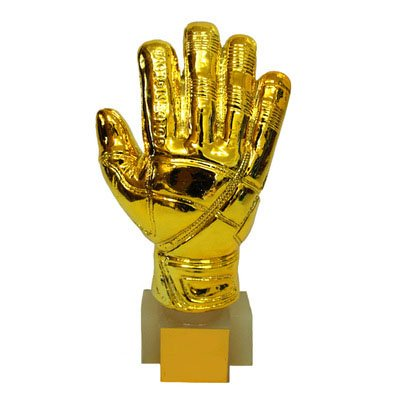
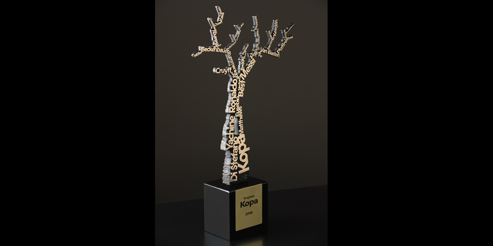
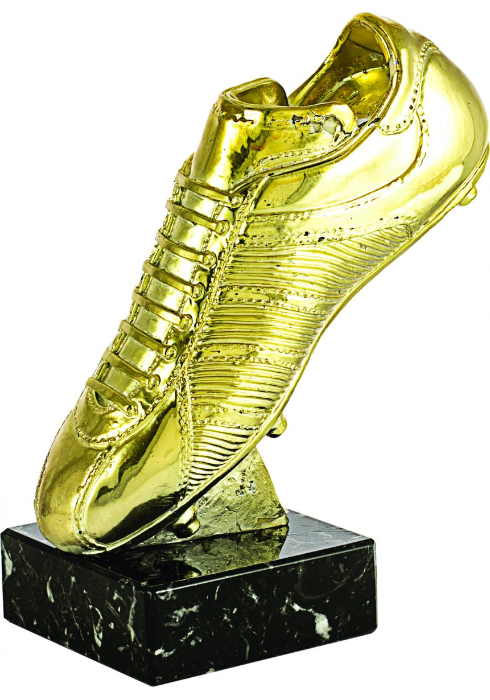

Au football, a la fin de l'année civile une cérémonie est organisée par la Fédération Internationale de Football Association(FIFA) pour récompenser le meilleur joueur de l année dans chaque distinction. Il y a le ballon d'or qui récompense le meilleur joueur de l'année au dessus de l age de 21 ans. Il y a les gants en or qui récompense le meilleur gardien de l'année. Il y a le trophée kopa qui récompense le meilleur jeune joueur de l année c est a dire en dessous de 21 ans. Il y a aussi le trophée du soulier d or qui récompense le meilleur buteur de l'année c est a dire le joueur qui a marqué le plus de buts sur l'année. Il y a le ballon d or féminin qui récompense la meilleure joueuse féminine de l'année. Toutes ces distinctions sont des distinctions individuelles. Pour désigner le vainqueur de chaque trophée, la FIFA organise un classement en fonction des titres que les joueurs ont remportés avec leur club et leur nation.



Page 1 Page 5